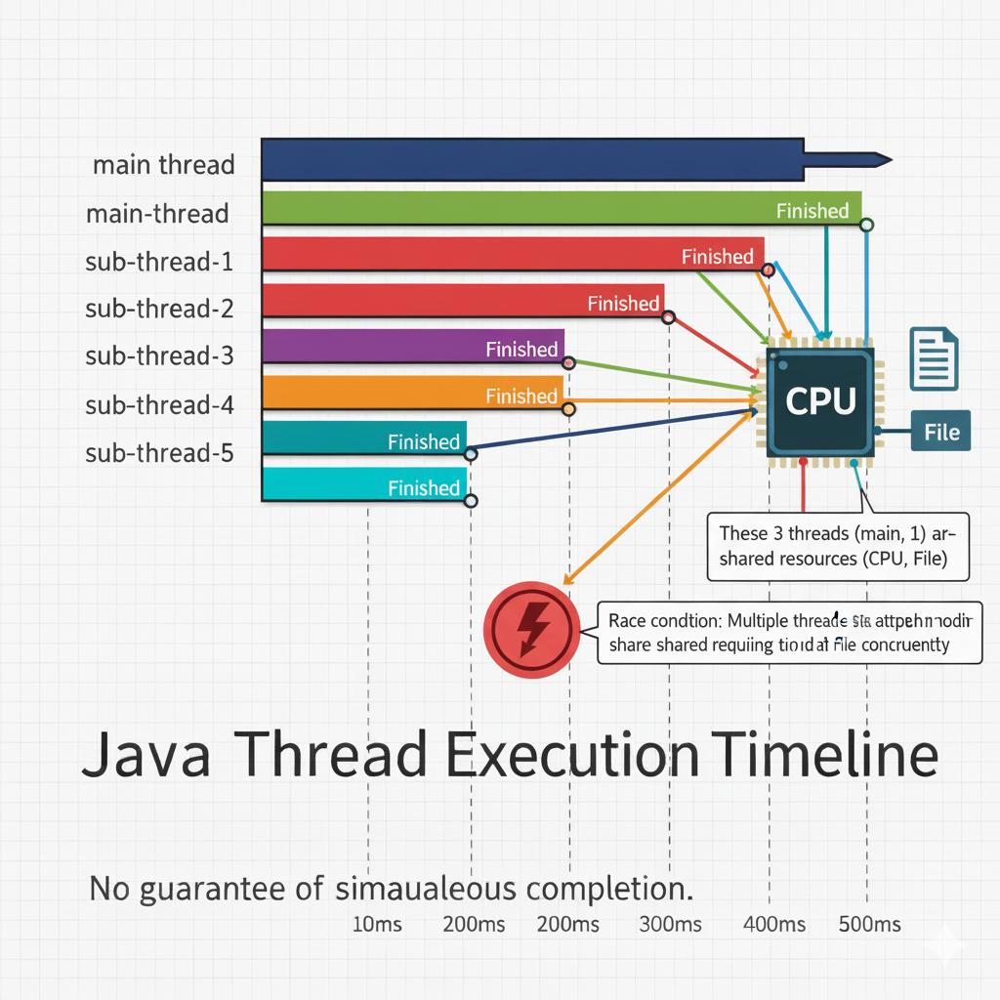

Concurrency: Notes from the Dev Trenches 👨💻
"Because not everything can be done one step at a time." - *Me, 10 years ago, frustrated with a slow UI.*
1. The Life Cycle of a Thread: Thread States 🔄
Ever wondered what your threads are up to? They aren't just 'running' or 'not running.' They're like little employees with a clear set of statuses. Knowing these states is key to debugging multi-threaded apps.
- NEW: Born, but not started. The thread is ready to go, like a sprinter at the starting line, waiting for the 'Go' command.
- RUNNABLE: Ready to run or already running. The CPU scheduler is in charge here, cycling through tasks. Think of it as being in the 'queue' for the coffee machine.
- BLOCKED / WAITING: Paused, usually waiting for a **lock** to be released (like a synchronized block) or for another thread to notify it (
wait()). It's like being on hold, waiting for the resource. - TIMED_WAITING: Waiting for a specified time (e.g.,
sleep()or a timeout onwait()). "I'll wait exactly 5 minutes, then I'm out!" - TERMINATED: Finished execution. The job's done. Time to clean up and go home. 👋
💡 Pro Tip: Never Call a Thread's run() Directly!
Always use start(). Calling run() just executes the code in the **current** thread, defeating the whole purpose of creating a new one! It's like telling an employee to 'start' a task, but then doing it yourself on *your* desk.
2. Synchronization (The Bouncer at the Club 🕺)
Java Multi-threading Synchronization: The Core Idea
When two or more threads access a shared resource (like a database connection or a counter variable), they need some way to ensure that the resource will be accessed by **only one thread at a time**. The process by which this is achieved is called **synchronization**.
In Java, synchronization primarily prevents *thread interference* (when multiple threads try to write data simultaneously, corrupting it) and *memory consistency errors* (when one thread sees old data written by another).
It is typically implemented using the **synchronized keyword**, which can be applied to methods or blocks of code, ensuring only one thread can execute that section at a time. This thread holds an **intrinsic lock** (or monitor) for the object.
Key concepts often associated with synchronization include intrinsic locks, the classic **wait-notify mechanisms** for communication, and the more flexible **explicit locks** from the java.util.concurrent.locks package.


3. Priority, Deadlock, and Race Situations 🛑
Thread Priority (Don't Trust It Too Much!)
You can set a thread's priority (e.g., MIN, NORM, MAX), but it's really just a polite suggestion to the OS scheduler. I've learned to **never rely on priority** for correctness; use synchronization instead.
🎮 Game Idea: Deadlock Diner
Concept: Illustrate Deadlock.
Setup: Two friends (Thread 1 and Thread 2) are at a table. Thread 1 needs a **Fork (Resource A)** and a **Knife (Resource B)**. Thread 2 also needs a Fork and a Knife.
Scenario: Thread 1 grabs the **Fork**. Thread 2 grabs the **Knife**. Now, Thread 1 waits for the Knife (which Thread 2 has), and Thread 2 waits for the Fork (which Thread 1 has). **Stalemate!** They'll wait forever, hungry. This is a classic Deadlock.
🚗 Game Idea: Race Condition Rally
Concept: Illustrate Race Condition (which synchronization prevents).
Setup: Two threads are trying to increment a shared counter variable (e.g., a bank account balance). Start value: $100.
Scenario: Both threads read $100. Both calculate $100 + $10 = $110. Both write $110 back. **Expected Final:** $120. **Actual Final:** $110. **The Race!** The non-atomic operations (Read, Calculate, Write) interleaved badly. This is a Race Condition.
4. Inter-thread Communication and Lifecycle Management 📢
Threads aren't islands. They need to talk and be managed gracefully. This is where wait(), notify(), and notifyAll() come in.
Inter-thread Communication (The Conference Call 📞)
wait(): The thread releases its lock and goes into a waiting state until another thread notifies it. "I'm going on mute and will hang up until you have the data."notify(): Wakes up **one** (arbitrary) waiting thread. "Hey, I have the data, one of you can wake up now!"notifyAll(): Wakes up **all** waiting threads. "The data is here! Everyone check if it's for you!"
⚠️ Crucial Rule: Always Call wait(), notify(), and notifyAll() from within a **synchronized** block/method!
If you don't, you'll get an IllegalMonitorStateException. The lock needs to be held to manage who is waiting on it!
Suspending, Resuming, and Stopping Threads (The Bad Old Days)
You might see methods like suspend(), resume(), and stop() in legacy code. **DO NOT USE THEM.** They are deprecated because they can lead to unpredictable deadlocks and resource corruption.
The Modern, Graceful Way:
To stop a thread, use a **volatile boolean flag** (e.g., isRunning). The thread periodically checks this flag and exits its run() method naturally when the flag is set to false by another thread.
To suspend/resume, use the wait() and notify() mechanism. Have the thread wait() when it needs to pause, and another thread notify() it when it should resume.